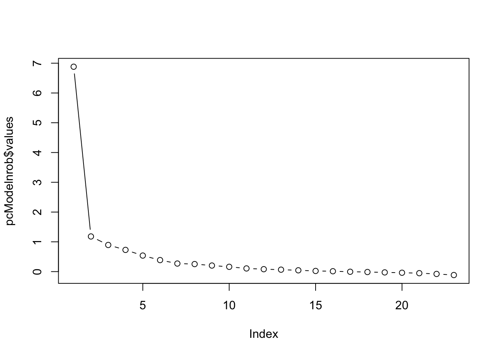
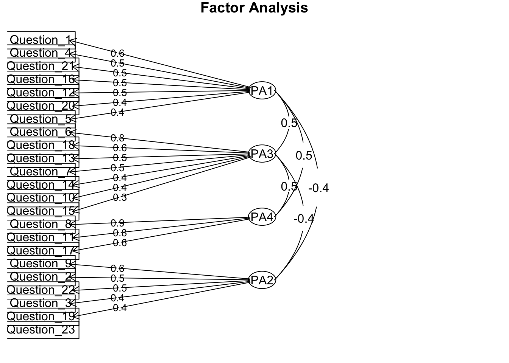

Lab 4: Exploratory and Confirmatory Factor Analyses
Author
Usman Afzali
In this lab we will have a look at a scale used in Prof Andy Field’s textbook (Discovering Statistics Using IBM SPSS Statistics) to conduct EFA and CFA analyses. The purpose of the factor analysis exercise is to get a better understanding of the psychological construct (SPSS Anxiety) as measured by the SAQ (i.e., construct validity information). Knowing the construct validity of a scale allows us to make an informed decision on how the scale can be used. One of the most common usages is to create valid composite scores. We randomly divided up the original dataset of responses on the SAQ into an EFA sample and a CFA sample (Please note that Usman used the same dataset for EFA in the class too, but he used the data from all subjects). Dividing up is a common methodological strategy in scale development to obtain two independent samples. This lab is important because it provides you with an experiential learning opportunity to conduct exploratory and confirmatory factor analyses. This is an important skill that will be assessed in your Lab Report (the next assignment).
Task 1: Exploratory Factor Analysis – Deciding on a factor structure
Q1. Import the dataset into R. Go through to ensure that the data variable information is correct for all the variables (i.e., measure type, data type, missing values).
Q3. Here is a neat trick; R (and other data analysis software) use the filter function that enables you to work with a subset of a large dataset. This is handy for keeping analyses tidy. For this exercise, we are going to use a filter to separate out our EFA and CFA samples. We designate 1 to the EFA subsample and 2 to the CFA sample.
Q4. Set extraction method to ‘Principal axis’ (allowing for measurement error with the new scale being developed) and rotation method to ‘Promax’ (allowing for factors to correlate because most psychological constructs do correlate to some extent). Number of factors should be based on eigenvalues (Eigenvalues greater than 1). Hide loadings below 0.4; and show Factor summary.
Q5. Check both the options under ‘assumption checks’ (Bartlett’s test of sphericity and KMO measure of sampling adequacy). Do our data satisfy both assumptions for EFA?
Q6. With the criteria of eigenvalues greater than 1, how many factors were extracted?
Q7. Since a 1-factor model implies that SAQ is a 23-item scale, to explore how to make the scale more parsimonious we shall rerun the factor analysis with a more liberal eigenvalue. Let’s try eigenvalues greater than 0, how many factors were extracted now?
We are running principal axis factoring, with arbitrary number of 10 factors and no rotation.
pcModelnr<-psych::fa(EFA_items, nfactors =10, fm ='pa', rotate ="none")pcModelnr
Factor Analysis using method = pa
Call: psych::fa(r = EFA_items, nfactors = 10, rotate = "none", fm = "pa")
Standardized loadings (pattern matrix) based upon correlation matrix
PA1 PA2 PA3 PA4 PA5 PA6 PA7 PA8 PA9 PA10 h2
Question_1 0.54 0.12 -0.25 0.21 -0.29 -0.21 -0.08 0.09 0.03 0.10 0.57
Question_2 -0.29 0.39 0.09 0.15 0.00 0.02 -0.07 -0.09 0.05 0.08 0.29
Question_3 -0.61 0.26 0.14 0.06 0.03 0.04 0.05 -0.02 0.12 0.01 0.48
Question_4 0.62 0.09 -0.15 0.13 -0.13 0.02 -0.06 0.05 -0.06 -0.03 0.46
Question_5 0.53 0.05 -0.11 0.10 -0.19 -0.04 -0.17 0.03 0.02 -0.05 0.37
Question_6 0.57 0.05 0.52 -0.02 0.08 0.03 -0.21 0.14 0.03 0.11 0.68
Question_7 0.69 0.03 0.22 0.09 0.14 0.05 -0.17 0.01 -0.17 -0.16 0.64
Question_8 0.58 0.41 -0.20 -0.32 0.09 -0.01 0.00 -0.02 -0.06 0.00 0.65
Question_9 -0.28 0.51 0.05 0.24 0.10 -0.05 -0.01 -0.12 -0.10 0.08 0.44
Question_10 0.42 0.02 0.22 -0.02 -0.15 0.08 -0.04 -0.01 0.21 -0.01 0.30
Question_11 0.67 0.29 -0.14 -0.39 0.09 0.01 0.03 0.14 0.09 0.00 0.75
Question_12 0.64 -0.10 -0.01 0.20 0.01 -0.08 0.19 0.01 -0.03 -0.10 0.52
Question_13 0.66 0.07 0.24 0.05 0.09 -0.14 0.24 0.07 0.08 -0.05 0.59
Question_14 0.63 -0.02 0.14 0.08 0.03 -0.04 0.13 -0.13 -0.10 0.18 0.50
Question_15 0.56 -0.06 0.14 -0.07 -0.19 0.44 0.10 -0.07 -0.06 0.03 0.58
Question_16 0.67 -0.01 -0.11 0.11 -0.27 0.10 0.04 -0.10 0.06 0.01 0.57
Question_17 0.63 0.34 -0.09 -0.21 0.02 -0.03 0.02 -0.13 -0.03 -0.02 0.59
Question_18 0.67 0.00 0.23 0.14 0.06 -0.15 0.08 0.01 0.04 0.00 0.55
Question_19 -0.37 0.29 0.06 0.05 -0.08 0.05 0.02 -0.02 0.16 -0.09 0.27
Question_20 0.38 -0.20 -0.32 0.12 0.29 0.14 -0.01 0.11 0.09 0.18 0.47
Question_21 0.65 -0.09 -0.22 0.25 0.32 0.08 -0.10 -0.18 0.13 -0.09 0.72
Question_22 -0.27 0.34 -0.08 0.23 0.04 0.15 0.05 0.09 0.00 -0.07 0.29
Question_23 -0.12 0.20 -0.08 0.23 0.01 0.15 0.10 0.27 -0.10 -0.01 0.23
u2 com
Question_1 0.43 3.1
Question_2 0.71 2.7
Question_3 0.52 1.6
Question_4 0.54 1.4
Question_5 0.63 1.7
Question_6 0.32 2.6
Question_7 0.36 1.7
Question_8 0.35 2.8
Question_9 0.56 2.5
Question_10 0.70 2.5
Question_11 0.25 2.3
Question_12 0.48 1.5
Question_13 0.41 1.8
Question_14 0.50 1.6
Question_15 0.42 2.5
Question_16 0.43 1.6
Question_17 0.41 2.0
Question_18 0.45 1.5
Question_19 0.73 2.7
Question_20 0.53 5.0
Question_21 0.28 2.6
Question_22 0.71 3.7
Question_23 0.77 4.9
PA1 PA2 PA3 PA4 PA5 PA6 PA7 PA8 PA9 PA10
SS loadings 6.88 1.18 0.89 0.73 0.54 0.39 0.27 0.25 0.20 0.16
Proportion Var 0.30 0.05 0.04 0.03 0.02 0.02 0.01 0.01 0.01 0.01
Cumulative Var 0.30 0.35 0.39 0.42 0.44 0.46 0.47 0.48 0.49 0.50
Proportion Explained 0.60 0.10 0.08 0.06 0.05 0.03 0.02 0.02 0.02 0.01
Cumulative Proportion 0.60 0.70 0.78 0.84 0.89 0.92 0.95 0.97 0.99 1.00
Mean item complexity = 2.5
Test of the hypothesis that 10 factors are sufficient.
The degrees of freedom for the null model are 253 and the objective function was 7.74 with Chi Square of 9873.74
The degrees of freedom for the model are 68 and the objective function was 0.09
The root mean square of the residuals (RMSR) is 0.01
The df corrected root mean square of the residuals is 0.02
The harmonic number of observations is 1285 with the empirical chi square 63.4 with prob < 0.64
The total number of observations was 1285 with Likelihood Chi Square = 111.33 with prob < 0.00072
Tucker Lewis Index of factoring reliability = 0.983
RMSEA index = 0.022 and the 90 % confidence intervals are 0.014 0.03
BIC = -375.45
Fit based upon off diagonal values = 1
Measures of factor score adequacy
PA1 PA2 PA3 PA4 PA5
Correlation of (regression) scores with factors 0.97 0.83 0.83 0.80 0.75
Multiple R square of scores with factors 0.94 0.70 0.69 0.64 0.56
Minimum correlation of possible factor scores 0.88 0.39 0.38 0.28 0.12
PA6 PA7 PA8 PA9 PA10
Correlation of (regression) scores with factors 0.68 0.62 0.59 0.55 0.51
Multiple R square of scores with factors 0.46 0.39 0.35 0.30 0.26
Minimum correlation of possible factor scores -0.08 -0.23 -0.30 -0.40 -0.49
We change rotation to oblimin.
pcModelnrob<-psych::fa(EFA_items, nfactors =10, fm ='pa', rotate ="oblimin")
Loading required namespace: GPArotation
Warning in GPFoblq(L, Tmat = Tmat, normalize = normalize, eps = eps, maxit =
maxit, : convergence not obtained in GPFoblq. 1000 iterations used.
pcModelnrob
Factor Analysis using method = pa
Call: psych::fa(r = EFA_items, nfactors = 10, rotate = "oblimin", fm = "pa")
Standardized loadings (pattern matrix) based upon correlation matrix
PA4 PA7 PA1 PA5 PA3 PA2 PA6 PA8 PA9 PA10 h2
Question_1 0.04 0.75 0.04 -0.02 0.01 0.02 -0.06 0.01 -0.03 -0.03 0.57
Question_2 -0.02 0.03 -0.11 -0.01 0.08 0.49 -0.01 -0.01 -0.07 0.08 0.29
Question_3 -0.10 -0.20 -0.02 -0.09 -0.04 0.35 -0.06 0.05 -0.14 0.15 0.48
Question_4 0.12 0.40 0.02 0.09 0.04 -0.02 0.13 0.08 0.12 -0.02 0.46
Question_5 0.06 0.47 -0.07 0.07 0.12 -0.08 0.04 -0.01 0.10 0.09 0.37
Question_6 0.01 0.02 0.05 -0.01 0.76 0.02 0.05 -0.02 0.00 -0.01 0.68
Question_7 0.09 0.02 0.09 0.15 0.38 -0.05 0.07 0.03 0.35 -0.02 0.64
Question_8 0.81 0.03 -0.04 0.00 -0.04 0.07 0.01 -0.01 0.05 -0.05 0.65
Question_9 0.03 0.00 -0.01 -0.01 0.01 0.63 -0.10 0.04 0.05 -0.06 0.44
Question_10 0.00 0.13 0.09 0.03 0.24 -0.03 0.20 -0.10 -0.11 0.21 0.30
Question_11 0.81 0.00 0.05 0.02 0.07 -0.12 -0.01 0.05 -0.08 0.05 0.75
Question_12 -0.04 0.14 0.49 0.14 -0.10 -0.11 0.09 0.04 0.12 -0.04 0.52
Question_13 0.14 -0.02 0.64 0.00 0.10 -0.02 0.00 0.01 -0.02 0.02 0.59
Question_14 0.02 0.07 0.31 0.06 0.11 0.09 0.22 -0.15 -0.02 -0.25 0.50
Question_15 0.05 -0.05 -0.01 -0.01 0.07 -0.05 0.72 0.03 0.01 -0.01 0.58
Question_16 0.02 0.39 0.09 0.10 -0.08 -0.03 0.37 -0.08 -0.01 0.05 0.57
Question_17 0.61 0.06 0.07 0.03 -0.03 0.11 0.09 -0.12 0.07 -0.01 0.59
Question_18 -0.01 0.11 0.47 0.09 0.22 0.00 -0.01 -0.06 0.03 -0.03 0.55
Question_19 0.00 -0.05 -0.02 -0.08 -0.08 0.27 -0.01 0.04 -0.08 0.26 0.27
Question_20 0.03 0.02 -0.06 0.58 0.01 -0.10 0.01 0.15 -0.18 -0.17 0.47
Question_21 0.02 0.01 0.06 0.79 0.00 0.04 0.01 -0.07 0.08 0.05 0.72
Question_22 -0.01 -0.01 -0.01 0.05 -0.10 0.36 0.04 0.29 0.02 0.11 0.29
Question_23 -0.06 0.08 0.06 -0.07 -0.03 0.18 0.07 0.43 0.03 -0.02 0.23
u2 com
Question_1 0.43 1.0
Question_2 0.71 1.3
Question_3 0.52 3.0
Question_4 0.54 1.9
Question_5 0.63 1.5
Question_6 0.32 1.0
Question_7 0.36 2.7
Question_8 0.35 1.0
Question_9 0.56 1.1
Question_10 0.70 4.8
Question_11 0.25 1.1
Question_12 0.48 1.8
Question_13 0.41 1.2
Question_14 0.50 4.1
Question_15 0.42 1.1
Question_16 0.43 2.5
Question_17 0.41 1.3
Question_18 0.45 1.7
Question_19 0.73 2.7
Question_20 0.53 1.7
Question_21 0.28 1.1
Question_22 0.71 2.4
Question_23 0.77 1.6
PA4 PA7 PA1 PA5 PA3 PA2 PA6 PA8 PA9 PA10
SS loadings 2.06 1.64 1.56 1.41 1.25 1.24 1.18 0.44 0.38 0.34
Proportion Var 0.09 0.07 0.07 0.06 0.05 0.05 0.05 0.02 0.02 0.01
Cumulative Var 0.09 0.16 0.23 0.29 0.34 0.40 0.45 0.47 0.49 0.50
Proportion Explained 0.18 0.14 0.14 0.12 0.11 0.11 0.10 0.04 0.03 0.03
Cumulative Proportion 0.18 0.32 0.46 0.58 0.69 0.80 0.90 0.94 0.97 1.00
With factor correlations of
PA4 PA7 PA1 PA5 PA3 PA2 PA6 PA8 PA9 PA10
PA4 1.00 0.49 0.46 0.42 0.38 -0.13 0.42 -0.12 0.20 -0.11
PA7 0.49 1.00 0.50 0.48 0.23 -0.17 0.43 -0.12 0.25 -0.14
PA1 0.46 0.50 1.00 0.47 0.56 -0.19 0.46 -0.22 0.27 -0.15
PA5 0.42 0.48 0.47 1.00 0.27 -0.30 0.38 -0.03 0.28 -0.28
PA3 0.38 0.23 0.56 0.27 1.00 -0.17 0.43 -0.19 0.21 -0.04
PA2 -0.13 -0.17 -0.19 -0.30 -0.17 1.00 -0.28 0.13 0.05 0.19
PA6 0.42 0.43 0.46 0.38 0.43 -0.28 1.00 -0.17 0.22 -0.07
PA8 -0.12 -0.12 -0.22 -0.03 -0.19 0.13 -0.17 1.00 -0.16 0.01
PA9 0.20 0.25 0.27 0.28 0.21 0.05 0.22 -0.16 1.00 -0.05
PA10 -0.11 -0.14 -0.15 -0.28 -0.04 0.19 -0.07 0.01 -0.05 1.00
Mean item complexity = 1.9
Test of the hypothesis that 10 factors are sufficient.
The degrees of freedom for the null model are 253 and the objective function was 7.74 with Chi Square of 9873.74
The degrees of freedom for the model are 68 and the objective function was 0.09
The root mean square of the residuals (RMSR) is 0.01
The df corrected root mean square of the residuals is 0.02
The harmonic number of observations is 1285 with the empirical chi square 63.4 with prob < 0.64
The total number of observations was 1285 with Likelihood Chi Square = 111.33 with prob < 0.00072
Tucker Lewis Index of factoring reliability = 0.983
RMSEA index = 0.022 and the 90 % confidence intervals are 0.014 0.03
BIC = -375.45
Fit based upon off diagonal values = 1
Measures of factor score adequacy
PA4 PA7 PA1 PA5 PA3 PA2
Correlation of (regression) scores with factors 0.93 0.87 0.88 0.89 0.87 0.81
Multiple R square of scores with factors 0.86 0.76 0.77 0.78 0.76 0.66
Minimum correlation of possible factor scores 0.72 0.52 0.54 0.57 0.51 0.32
PA6 PA8 PA9 PA10
Correlation of (regression) scores with factors 0.84 0.63 0.66 0.60
Multiple R square of scores with factors 0.70 0.40 0.43 0.35
Minimum correlation of possible factor scores 0.41 -0.21 -0.14 -0.29
Q8. Since a X-factor model is not parsimonious either, let’s look at the scree plot. According to the scree plot, after what number of factors does it seems like minimal additional variance is explained?
plot (pcModelnrob$values, type ="b")

Q9. Fix the EFA to that number and look to see if the factor loadings of the items make intuitive sense by looking at which scale items are included in each factor loading. You will need to refer to the scale items for reflection (see The SPSS Anxiety Questionnaire (SAQ) png file on Learn). Reduce the number of factors by 1 and explore that factor structure the same way, and repeat by reducing that number of factors by 1 again. Take your time with this and use another sheet within your codebook to help you understand various factor structures. You can also talk to a friend from class/your teammate and get their opinions on this (a common practice amongst psychology researchers while doing a factor analysis). After exploring a couple of options, which factor model seems to make the most sense?
Scree plot shows up to 4 factors, so we restrict the number of factors to four.
pcModel4f<-psych::fa(EFA_items, nfactors =4, fm ='pa', rotate ="oblimin")pcModel4f
Factor Analysis using method = pa
Call: psych::fa(r = EFA_items, nfactors = 4, rotate = "oblimin", fm = "pa")
Standardized loadings (pattern matrix) based upon correlation matrix
PA1 PA3 PA4 PA2 h2 u2 com
Question_1 0.57 -0.02 0.13 0.06 0.383 0.62 1.1
Question_2 -0.06 0.06 0.00 0.52 0.277 0.72 1.1
Question_3 -0.32 -0.04 -0.11 0.41 0.474 0.53 2.1
Question_4 0.54 0.07 0.16 0.03 0.450 0.55 1.2
Question_5 0.42 0.09 0.12 -0.02 0.308 0.69 1.3
Question_6 -0.14 0.79 0.03 0.00 0.548 0.45 1.1
Question_7 0.20 0.52 0.08 -0.03 0.515 0.49 1.4
Question_8 0.01 -0.07 0.85 0.05 0.667 0.33 1.0
Question_9 0.02 0.03 0.02 0.63 0.366 0.63 1.0
Question_10 0.02 0.41 0.06 -0.03 0.222 0.78 1.1
Question_11 -0.04 0.05 0.78 -0.11 0.673 0.33 1.1
Question_12 0.49 0.27 -0.06 -0.10 0.468 0.53 1.7
Question_13 0.13 0.54 0.11 -0.01 0.481 0.52 1.2
Question_14 0.23 0.43 0.05 -0.07 0.413 0.59 1.6
Question_15 0.13 0.31 0.12 -0.14 0.300 0.70 2.1
Question_16 0.49 0.14 0.11 -0.08 0.468 0.53 1.3
Question_17 0.09 0.12 0.64 0.06 0.567 0.43 1.1
Question_18 0.24 0.58 -0.03 -0.01 0.526 0.47 1.3
Question_19 -0.16 -0.05 0.01 0.36 0.224 0.78 1.4
Question_20 0.42 -0.14 0.03 -0.22 0.235 0.77 1.8
Question_21 0.54 0.09 0.05 -0.11 0.448 0.55 1.2
Question_22 0.15 -0.14 -0.03 0.47 0.244 0.76 1.4
Question_23 0.20 -0.08 -0.07 0.29 0.095 0.91 2.1
PA1 PA3 PA4 PA2
SS loadings 2.78 2.71 2.26 1.61
Proportion Var 0.12 0.12 0.10 0.07
Cumulative Var 0.12 0.24 0.34 0.41
Proportion Explained 0.30 0.29 0.24 0.17
Cumulative Proportion 0.30 0.59 0.83 1.00
With factor correlations of
PA1 PA3 PA4 PA2
PA1 1.00 0.53 0.55 -0.37
PA3 0.53 1.00 0.52 -0.35
PA4 0.55 0.52 1.00 -0.23
PA2 -0.37 -0.35 -0.23 1.00
Mean item complexity = 1.4
Test of the hypothesis that 4 factors are sufficient.
The degrees of freedom for the null model are 253 and the objective function was 7.74 with Chi Square of 9873.74
The degrees of freedom for the model are 167 and the objective function was 0.55
The root mean square of the residuals (RMSR) is 0.03
The df corrected root mean square of the residuals is 0.04
The harmonic number of observations is 1285 with the empirical chi square 534.9 with prob < 4.2e-40
The total number of observations was 1285 with Likelihood Chi Square = 698.46 with prob < 4.2e-66
Tucker Lewis Index of factoring reliability = 0.916
RMSEA index = 0.05 and the 90 % confidence intervals are 0.046 0.054
BIC = -497.01
Fit based upon off diagonal values = 0.99
Measures of factor score adequacy
PA1 PA3 PA4 PA2
Correlation of (regression) scores with factors 0.90 0.91 0.92 0.83
Multiple R square of scores with factors 0.81 0.83 0.85 0.70
Minimum correlation of possible factor scores 0.62 0.65 0.71 0.39
Q10. How much total variance is accounted for by this final factor solution (e.g., total cumulative%)? What is the amount of variance accounted for by each factor?
Q12. Make a note with yourself on the final items and which factor they belong to.
Q13. Name each of the factors. What is your conclusion from the EFA?
psych::fa.diagram(pcModel4f)

Task 2: Confirmatory Factor Analysis
Q1. Change your filter to select the CFA subsample. For this task, we want to examine whether the decision on how items should load on the SAQ based on EFA can be replicated on an independent sample. We are going to refer to the criteria for model fit mentioned in the CFA lecture.
Q2 - 6. Conducting CFA based on the factor structures above. Also, get the path diagram, and model fit measures. 3. Click on ‘Factor 1’ and change it to the name that you decided for Factor 1 in the previous exercise. Drag the relevant items to the space below. 4. ‘Add New Factor’ and change the name to your decided name for Factor 2 in the previous exercise. Add the relevant items. 5. Do the same for the rest of the factors. 6. Under Additional output, tick Path diagram. Path diagram shows you a figure scheme of all observed and latent variables where observed variables load on their corresponding factors and the factors are correlated with each other.